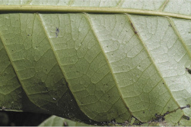
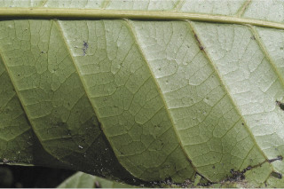
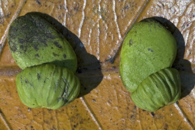
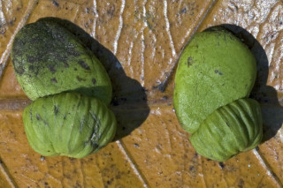

Botanical descriptions
ಸಸ್ಯದ ವೈಜ್ಞಾನಿಕ ವಿವರ
Botanical descriptions
மரங்களின் பண்புகள்
Habit
ಪ್ರಕೃತಿ
Habit
வளரியல்பு
Large trees, up to 35 m tall.
35 ಮೀ ಎತ್ತರದವರೆಗೂ ಬೆಳೆಯುವ ದೊಡ್ಡ ಮರಗಳು.
35 മീറ്റര് വരെ ഉയരത്തില് വളരുന്ന വന്മരങ്ങള്.
பெரிய மரம் 35 மீ. உயரம் வரை வளரக்கூடியது.
Trunk & Bark
ಕಾಂಡ ಮತ್ತು ತೊಗಟೆ
Trunk & Bark
தண்டு மற்றும் மரப்பட்டை
Bark fissured; blaze pink.
ತೊಗಟೆ ಸೀಳಿಕಾ ವಿನ್ಯಾಸದಲ್ಲಿದ್ದು ನಸುಗೆಂಪು ಬಣ್ಣದ ಕಚ್ಚುಗಳನ್ನು ಹೊಂದಿರುತ್ತದೆ
വിണ്ടുകീറിയ പുറംതൊലി, പിങ്ക് നിറത്തിലുള്ള വെട്ട് പാട്.
மரத்தின் பட்டை வெடிப்புடன் காணப்படும்; உள்பட்டை பிங்க் நிறம்.
Branches and Branchlets
ಕವಲುಗಳು ಮತ್ತು ಕಿರುಕೊಂಬೆಗಳು
Branches and Branchlets
கிளைகள் & சிறிய நுனிக்கிளைகள்
Branchlets stout, glabrous
ಕಿರುಕೊಂಬೆಗಳು ದೃಢ ಹಾಗೂ ರೋಮರಹಿತವಾಗಿರುತ್ತವೆ.
അരോമിലവും ഉരുണ്ടതും ദൃഢവുമായ, ഉപശാഖകള്.
சிறிய நுனிக்கிளைகள் தடித்தது, உரோமங்களற்றது.
Exudates
ಎಲೆಗಳು
Exudates
இலைகள்
Latex black.
ಎಲೆಗಳು ಕುಡಿ ಕೊಂಬೆಗಳ ತುದಿಯಲ್ಲಿ ಗುಂಪಾಗಿದ್ದು, ಸರಳ ರೀತಿಯವಾಗಿದ್ದು ಪರ್ಯಾಯ ಸುತ್ತು ಜೋಡನಾ ವ್ಯವಸ್ಥೆಯಲ್ಲಿರುತ್ತವೆ. ಎಲೆ ತೊಟ್ಟುಗಳು ರೋಮ ರಹಿತವಾಗಿದ್ದು 5 ರಿಂದ 8 ಸೆಂ.ಮೀ. ಉದ್ದವಿದ್ದು ಗುಂಡಾಕೃತಿಯನ್ನು ಹೊಂದಿರುತ್ತದೆ. ಎಲೆಪತ್ರದ ಗಾತ್ರ 29-60 × 11-17 ಸೆಂ.ಮೀ. ಇದ್ದು, ಅಗಲವಾದ ಬುಗುರಿ ಆಕಾರ ಹೊಂದಿರುತ್ತದೆ. ತುದಿ ಗುಂಡಾಗಿದ್ದು ಬುಡಭಾಗ ಚೂರಾಗಿರುತ್ತದೆ. ಅಂಚು ಹಿಂಸುರಿಯಾಗಿದ್ದು, ಮೇಲ್ಮೈ ತೊಗಲಿನ ತರಹದ್ದು ಹಾಗೂ ರೋಮರಹಿತ; ಮಧ್ಯನಾಳ ಪತ್ರದ ಮೇಲ್ಭಾಗದಲ್ಲಿ ಚಪ್ಪಟೆಯಾಗಿಯೂ ತಳಭಾಗದಲ್ಲಿ ದೃಢವಾಗಿರುತ್ತದೆ. ಎರಡನೇ ದರ್ಜೆಯ ನಾಳಗಳು 14 ರಿಂದ 18 ಜೋಡಿ ಇದ್ದು ನೇರವಾಗಿದ್ದು, ಮೇಲ್ಭಾಗದಲ್ಲಿ ಪ್ರಾಮುಖ್ಯವಾಗಿ ಉಬ್ಬಿಕೊಂಡಿರುತ್ತದೆ. ಈ ನಾಳಗಳು ಪತ್ರದ ಅಂಚಿನ ಬಳಿ ತಿರುವು ಪಡೆಯುತ್ತವೆ. ತೃತೀಯ ದರ್ಜೆಯ ನಾಳಗಳು ಜಾಲಬಂಧ ನಾಳ ವಿನ್ಯಾಸದವು.
കറുത്തസ്രവം
இலைகள் தனித்தவை, மாற்றுஅடுக்கமானவை, சுழல் போன்று அமைந்தவை; நுனிக்கிளையில் இலைகள் கூட்டமாக மற்றும் நெருக்கமாகமைந்தவை; இலைக்காம்பு 5-8 செ.மீ. நீளமானது, தடித்தது, குறுக்குவெட்டுத் தோற்றத்தில் வளையமானது, இலைக்காம்பின் தளப்பகுதி பெருத்திருக்கும், உரோமங்களற்றது; இலை அலகு 29-60 X 11-17 செ.மீ., அகன்ற தலைகீழ் முட்டை வடிவம், அலகின் நுனி வட்டமானது, அலகின் தளம் கூரியது, அலகின் விளிம்பு பின்புறம் வளைந்து (ரெவலுட்) காணப்படும், கோரியேசியஸ்; மையநரம்பு மேற்புறத்தில் அலகின் பரப்பிற்கு சமமானது; இரண்டாம் நிலை நரம்புகள் 14-18 ஜோடிகள், இணையானது, இலையின் மேற்பரப்பில் தெளிவாக அமைந்தது; மூன்றாம் நிலை நரம்புகள் வலைபின்னல் அமைப்பு கொண்டது.
Leaves
ಪುಷ್ಪಮಂಜರಿ/ಹೂಗಳು
Leaves
மஞ்சரி / மலர்கள்
Leaves simple, alternate, spiral, clustered at twig ends; petiole 5-8 cm long, stout, terete, swollen at base, glabrous; lamina 29-60 x11-17 cm, wide obovate, apex rounded, base acute, margin revolute, coriaceous, glabrous; midrib flat above, stout beneath; secondary_nerves 14-18 pairs, straight, prominent, raised above, curving at margin; tertiary_nerves reticulate.
ಹೂಗಳು ಏಕಲಿಂಗಗಳಾಗಿದ್ದು ಹಾಗೂ ರೋಮರಹಿತವಾಗಿದ್ದು ಅಕ್ಷಾಕಂಕುಳಿನಲ್ಲಿ ಮತ್ತು ತುದಿಯಲ್ಲಿರುವ ಪುನರಾವೃತ್ತಿಯಾಗಿ ಕವಲೊಡೆದ ಪುಷ್ಪಮಂಜರಿಯಲ್ಲಿರುತ್ತವೆ.
ഇലകള് ലഘുവും സര്പ്പിളാകൃതിയില്, ഏകാന്തരക്രമത്തില് കമ്പുകളുടെ അറ്റത്ത്. കൂട്ടമായി അടുക്കിയിരിക്കുന്നു; ഇലഞെട്ടുകള് 5 മുതല് 8 സെ. മി. നീളമുള്ളതും, ദൃഢവും ഉരുണ്ണ്ടതും കീഴറ്റം വീര്ത്തതും, അരോമിലവുമാണ്; പത്രഫലകത്തിന് 29 മുതല് 60 സെ. മി. നീളവും 11 മുതല് 17 സെ. മി. വീതിയും, വീതിയേറിയ അണ്ഢാകൃതിയും, അഗ്രം വൃത്താകൃതിയിലും പത്രാധാരം നിശിതവും അരികുകള് അകത്തേക്ക് മടങ്ങിയതും ചര്മ്മില പ്രകൃതവും അരോമിലവുമാണ്; മുഖ്യസിര മുകള്ഭാഗത്ത പരന്നും കീഴ്ഭാഗത്ത് ദൃഢവുമാണ്; 14 മുതല് 18 ജോഡി നേരെയുള്ളതും, വ്യക്തമായതും മുകള്ഭാഗത്ത് ഉയര്ന്നും അരികുകള്ക്കടുത്ത് വളഞ്ഞുമാണ്; തൃതീയഞരമ്പുകള് ജാലികാവിന്യാസത്തിലാണ്.
மஞ்சரி தண்டின் இலைக்கோணங்கள் மற்றும் தண்டின் நுனியிலும் அமைந்த பேனிக்கிள், உரோமங்களற்றது, மலர்கள் ஒர்பாலானவை.
Inflorescence / Flower
ಕಾಯಿ /ಬೀಜ
Inflorescence / Flower
கனி / விதை
Inflorescence axillary and terminal panicle, glabrous; flowers polygamous.
ಕಾಯಿಗಳು 3ಸೆಂ.ಮೀ. ಉದ್ದವಿದ್ದು, ಒಂದು ಬೀಜ ಹೊಂದಿರುತ್ತವೆ. ಓರೆಯಾದ ಚತುರಸ್ರಾಕಾರದ ಆಕಾರದಲ್ಲಿದ್ದು ಮಾಂಸಲವಾದ ಹೈಪೋಕಾರ್ಪ್ ಮೇಲೆ ಆಸೀನವಾಗಿರುತ್ತವೆ.
പൂങ്കുലകള്, അരോമിലമായ കക്ഷിയമോ ഉച്ഛസ്ഥമോ ആയ പാനിക്കിളുകളാണ്്, പൂക്കള് ഏകലിംഗകളാണ്.
சாய்ந்த நீள்சதுர உள்ளோட்டுத்தசைகனி (ட்ரூப்), கருப்பு நிறத்தில் 3 செ.மீ. நீளம் வரை இருக்கக்கூடியது, பூத்தண்டு கிண்ணம் கனியை முழுவதும் மூடியிருக்கும், ஒரு விதையுடன் காணப்படும்.
Fruit and Seed
Fruit and Seed
Drupe, obliquely oblong, black up to 3 cm long, seated on fleshy hypocarp, 1-seeded.
ഒറ്റവിത്തുള്ള കായ മാംസളമായ ഹൈപ്പോകാര്പ്പിലുറച്ചിരിക്കുന്നു. 3 സെ. മി നീളമുള്ള, കറുത്ത, ചെരിഞ്ഞ ആയതാകാരത്തിലുള്ള അഭ്രകമാണ്.
Literatures
ಗ್ರಂಥ ಸೂಚಿ
Literatures
சான்று ஏடு
Fl. Sylv. 2: 232. 1870; Gamble, Fl. Madras 1: 267. 1997 (re. ed); Sasidharan, Biodiversity documentation for Kerala- Flowering Plants, part 6: 113. 2004
Fl. Sylv. 2: 232.1870; Gamble, Fl. Madras 1: 267.1997 (re.ed); Sasidharan, Biodiversity documentation for Kerala- Flowering Plants, part 6: 113. 2004
Fl. Sylv. 2: 232. 1870; Gamble, Fl. Madras 1: 267. 1997 (re. ed); Sasidharan, Biodiversity documentation for Kerala- Flowering Plants, part 6: 113. 2004
Fl. Sylv. 2: 232. 1870; Gamble, Fl. Madras 1: 267. 1997 (re. ed); Sasidharan, Biodiversity documentation for Kerala- Flowering Plants, part 6: 113. 2004


 


 
